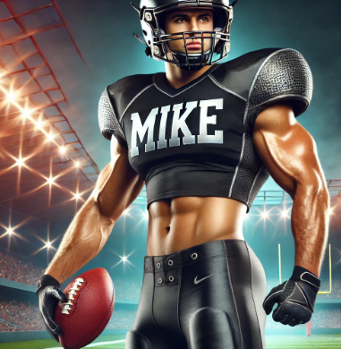
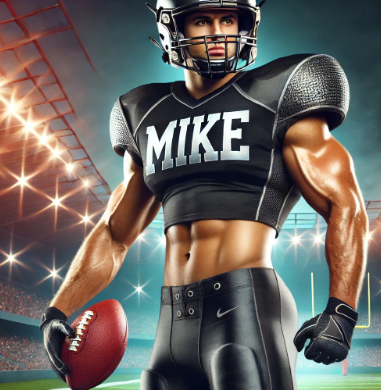

Snakes vs Killers
The #1 Snakes take on the last place Killers, nothing to read here, carry on. Easy win-loss respectively.
Karl With A Snarl vs John's Grill Gorillas
Battle for 2nd place (depending on Shark's outcome). Will the Gorilla's bounce back from last weeks lost or with the Snarls get a 2nd consecutive win?
Nathan's Niffty team vs Mighty Mikes
The Mighty Mikes have a chance to reach the middle of the standings and prove they can be contenders after a lousy start to the season. Will they win or will the Niffty Nathans spoil their comeback?
Perry's Perfect Team vs Lil Josh's Sharks
Perry's Perfect team has a chance to not only maintain mediocrity but beat the 2nd place Sharks and prove the latters strong start was due to easy opponents.
Bear Necessities vs Ugly Ass Mules
Must win game for the Bear Necessities. Will they win and share the middle of the standings or will the Mules hang on to the tiny thread of playoff contention and win? A Bear lost would mean they join the killers and Mules at the bottom of the standings.